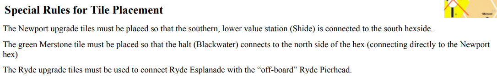

Подготовка: Оригинальная карта убрать 776 и 770 тайлы (коричневые)
Аукцион приваток:
- Подготовить - Ryde Pier & Ferry Company, Cowes Marina & Ferry Company, Yarmouth Port & Shipping Company, Brading Harbour Company, Президентский IOW и C&N.
- Ставка с шагом 5 начиная с 0, Хард пас, Платим ставку+что стоит приватка (заранее не выбираем за какую торги). Если выиграли президентский то выставляем ПАР и платим как обычно за президентский + ставку.
- Кто сидит слева от победителя стартанет следующий аукцион.
- Если все пасанули, то выиграл за 0 тот кто первый пас сказал, при этом если это директорский и денег не хватает то выставляешь самую низкую цену пара 74.
- Приоритетка в конце торгов передается тому у кого больше всех денег.
Приватки:
- Обычные дают ревеню и зарезервированный сертификат для соответствующей компании. Можно обменять в любой момент своего хода в СР (не считается действием).
- Приватки можно продать в банк - стоимость -30 от номинала. Приватки считаются в лимит акций.
СР:
- Можно держать 100% и продать 100%. 50% флоат. Полная капитализация.
- Покупать можно акции из:
- Только из текущего ряда если компании из этого ряда еще не были в ОР или Акции компании лежат на ИПО.
- Из следующего ряда если компании предыдущего ряда были в ОР или акции одной из компаний прошлого ряда раскуплены.
- Акции стоят половину если у компании нет поезда.
- Покупка по ИПО или из банка по цене акций.
- Если компания запустилась то она может построить тайл (если хоум не построен) и поставить бабышку на карту (не считается действием строительства).
- Продавать акции можно даже если она не была еще в ОР, но тогда ее цена не двигается. Остальные продажи как в 62.
- После покупки 8 цена после продажи не падает вовсе.
ОР:
- Сначала платят ревеню приватки.
- Строить 2 желтых (или 1 желтый если построили Город) или 1 апгрейд.
Специальные правила:

- Апгрейд можно делать только если есть путь на длину поезда без проезда через блокированные города. Компании без поезда - не могут грейдить.
- Станции (базы) можно ставить по обычным правилам.
Катаемся:
- Начало и конец пути должен быть в больших городах. Выход в море считается большим городом.
- На пути должна быть обязательно домашняя станция, остальные пути должны пересекаться как в 62.
- Можно проехать мимо маленьких городов и/или одного забитого бабышками большого города.
- + на поездах позволяет собирать маленькие станции. Если такие станции серые, то капает 10 в контору (деньги конторы и общий банк разные в этой игре).
Покупка поезда:
- Покупка обязательна. Если не хватает денег то контора становится инсолвент (см 13 страницу правил).
- Инсолвент конторы могут строить/апгрейдить только если бесплатно. Катаются на лизинговом поезде по формуле (см. карточку). Они всегда холдят и покупают поезд как только это становится возможно.
- Можно стать инсолвент только если есть валидный путь для катания.
- Можно из банка или у другой конторы минимум 10, с шагом в 10. (т.е 310 можно а 305 незя).
- Нельзя купить последний поезд из компании, только если у компании которая покупает нет поездов - тогда можно.
Без директора:
- Не могут строить/ставить базы. Катаются и холдят. Могут быть инсолвент. Нельзя купить сразу директорский из банка.
Конец игры:
- Цена достигла конца - доигрывается текущий ОР (не сет).
- В банке нет денег в ОР - доигрывается текущий ОР.
- В банке нет денег (СР) - играется один ОР.
- Национализация как тригер (Первый 9 куплен и когда у всех операционных компаний будет поезд):
- После покупки строить/грейдить/ставить бабышки можно только до конца этого сета ОР.
- После СР больше не считаются маленькие городки которые в контору деньги кладут.
- Компании катают ОР, но могут только платить/холдить и покупать/продавать поезда.
- СР по прежнему будет между сетами ОР.
- Если в конце ОР все компании хотябы имеют по одному поезду, то это тригер конца игры и тогда:
- Больше не будет СР.
- Банк становится бесконечным.
- Теперь в каждый ОР приватки платят ревеню, компании катают и платят доход как обычно (нельзя строить).
- Поезда теперь катаются только по большой цифре.
- Компании без директора по прежнему холдят и цена падает как обычно.
- Компании могут покупать поезда, но холдить не могут (только бездиректорные).
- В конце каждого ОР две компании которые покатались хуже всех больше не катаются (для них игра закончилась). Так компании выбывают из игры поочереди пока вовсе не останется ниодной компании (если осталась 1 или 2 они катаются последний раз и тоже заканчивают).
Банкротство:
- Если цена упала в банкротство, все акции возвращаются на ИПО без компенсации (можно перезапускаться).
- Бабышки конторы остаются на поле. Все что было у конторе (бабки, поезда, ...) у нее остается на компанейском чартере.
- Если банкротство - приоритетка передается игроку с меньшим количеством шейров (не сертификатов) без учета приваток. Если поровну то передается ближайшему кто сидит к приоритетке против часовой.
- Во время СР - В этот момент сток раунд заканчивается и игра продолжается с нового сток раунда.
- Во время ОР - отыгрывается полный сет ОР как кобычно.
- Если перезапустили банкрота то его цена ставится как обычно на ИПО, только цена теперь может быть в рейндже от 40 до максималки для этой конторы.
- После покупки 50% компания дополучит к тому что у нее осталось еще х10 от пара.
- Счет - приватки по прайсу, бабки и акции. Еси у компании нет поезда то акции считаются в половину цены с округлением вниз.